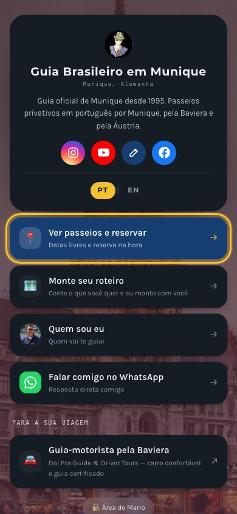
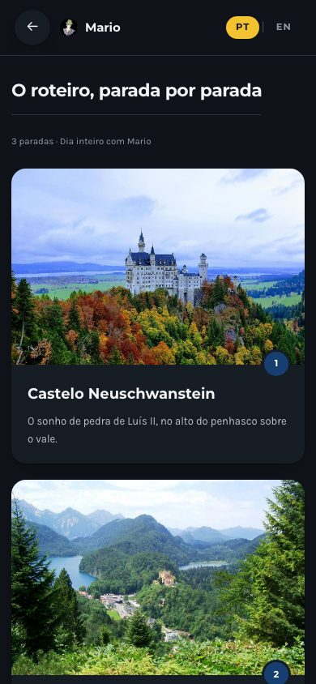
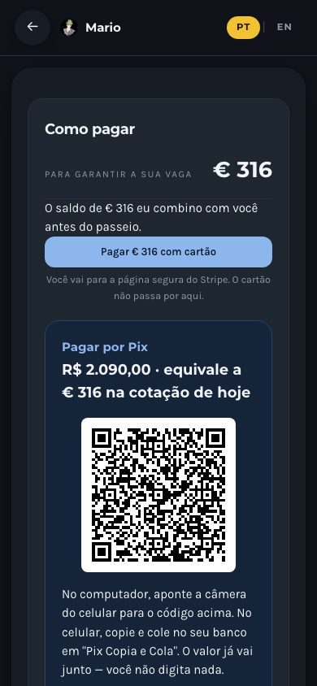
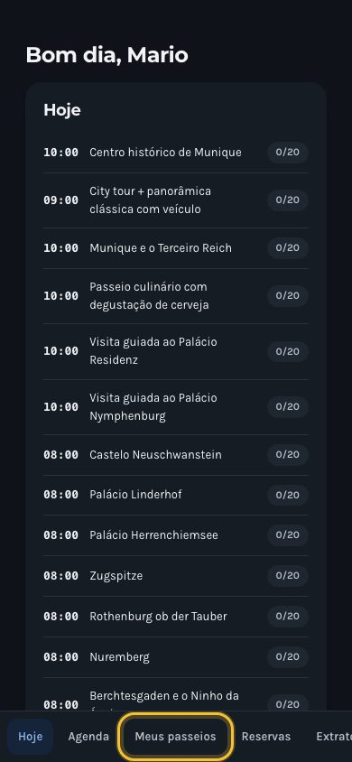

Proposta · Mario Dal Pra
Mario, os seus passeios já estão dentro do app.
Montei um protótipo com os passeios do seu site — Munique, Baviera e Áustria — com foto em cada parada. Abra no celular e veja como o seu cliente vai ver.
Abrir o seu appguia.eugeniofim.com/mario



- Seus passeios, prontos para venderOs passeios do seu site já estão lá. Você cria, edita e pausa outros quando quiser.
- Cartão: confirma sozinhoO cliente paga no cartão e o dinheiro cai na sua conta, em euro.
- Pix: o cliente anexa o comprovante no appQR code com o valor já em real. Você confere e confirma com um toque.
- Um painel só seuReservas, agenda, clientes e pedidos de roteiro personalizado.
App personalizado completo, com os seus passeios, preços, fotos, marca e pagamento configurados.R$ 1.500
É um protótipo: preços, textos e fotos você ajusta comigo antes de publicar.
Eugênio Fim · Ti Artes